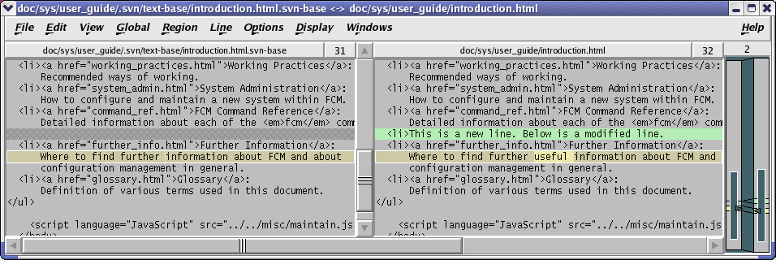
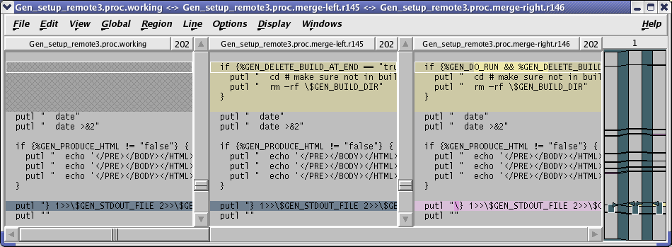
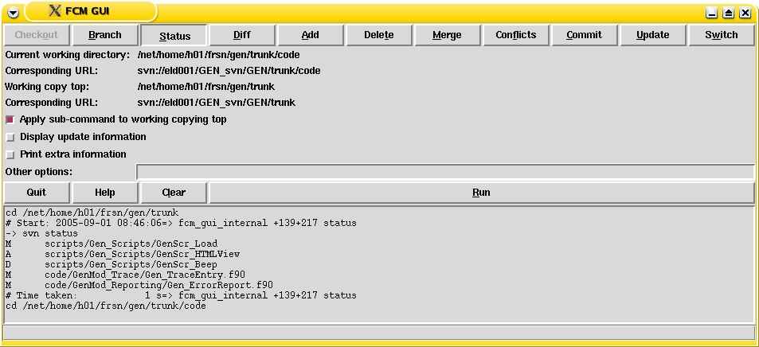
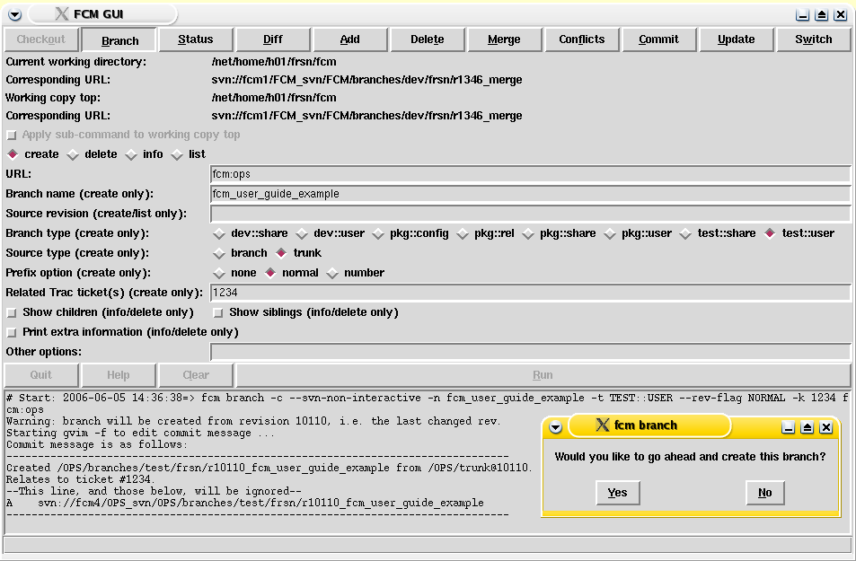
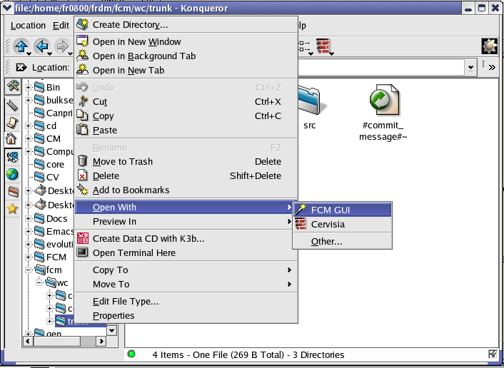

One of the key strengths of Subversion is its documentation. Version Control with Subversion (which we'll just refer to as the "Subversion book" from now on) is an excellent book which explains in detail how to use Subversion and also provides a good introduction to all the basic concepts of version control. Rather than trying to write our own explanations (and not doing as good a job) we will simply refer you to the Subversion book, where appropriate, for the relevant information.
In general, the approach taken in this section is to make sure that you first understand how to perform a particular action using the Subversion tools and then describe how this differs using FCM.
In order to use FCM you need to have a basic understanding of version control. If you're not already familiar with Subversion or CVS then please read the chapter Basic Concepts from the Subversion book. In particular, make sure that you understand:
Note that this chapter states that "working copies do not always correspond to any single revision in the repository". However, the FCM working practises do not encourage this and the wrapper scripts provided by FCM should ensure that your working copy (a local copy of the repository's files and directories where you can prepare changes) always corresponds to exactly one revision.
CVS users should already be familiar with all the basic concepts. This is not surprising since Subversion was designed as a replacement for CVS and it uses the same development model. However, there are some important differences which may confuse those more familiar with CVS. Fortunately, Appendix A of the Subversion book is specifically written for those moving from CVS to Subversion and you should read this if you are a CVS user.
Before we discuss the FCM system you need to have a good understanding of how to perform most of the normal day-to-day tasks using Subversion. Therefore, unless you are already familiar with Subversion, please read the chapter Guided Tour from the Subversion book.
So, now you have an understanding of how to do basic tasks using Subversion (you did read the Guided Tour didn't you?), how is using FCM different? Well, the key thing to remember is that, instead of using the command svn you need to use the command fcm. The advantages of this are as follows:
Full details of all the fcm commands available are provided in the FCM Command Reference section.
URL keywords can be used to specify URLs in fcm commands. The syntax is fcm:<keyword>. Keywords can be defined globally (see the file ../etc/fcm.cfg where-ever the fcm command has been installed) or individually in a user configuration file ($HOME/.fcm). See the FCM Command Reference for further details about configuration files.
For example, if you define a keyword in your configuration file as follows:
set::url::fcm svn://fcm1/FCM_svn/FCM
then you can abbreviate the URL as in the following examples:
# fcm ls svn://fcm1/FCM_svn/FCM fcm ls fcm:fcm # fcm ls svn://fcm1/FCM_svn/FCM/trunk fcm ls fcm:fcm_tr # OR: fcm ls fcm:fcm-tr # fcm ls svn://fcm1/FCM_svn/FCM/branches fcm ls fcm:fcm_br # OR: fcm ls fcm:fcm-br # fcm ls svn://fcm1/FCM_svn/FCM/tags fcm ls fcm:fcm_tg # OR: fcm ls fcm:fcm-tg
Using URL keywords has two advantages.
In a similar way, revision keywords can be used to specify revision numbers in fcm commands. The keyword can be used anywhere a revision number can be used. Each keyword is associated with a repository keyword and can only be used when referring to that repository.
For example, if you define a keyword in your configuration file as follows:
set::revision::fcm::vn1.0 112
then the following commands are equivalent:
fcm log -r 112 svn://fcm1/FCM_svn/trunk
fcm log -r vn1.0 fcm:fcm_tr
Code differences can be displayed graphically using xxdiff by using the --graphical (or -g) option to fcm diff. This option can be used in combination with any other options which are accepted by svn diff.
An example display from xxdiff is shown below.

xxdiff 2-way display
Points to note:
# EITHER: in the Korn shell: (SHELL PROMPT)$ export FCM_GRAPHIC_DIFF=tkdiff # OR: in your $HOME/.fcm: set::tool::graphic_diff tkdiff
Your working copy may contain files in conflict as a result of an update or a merge (covered later). Conflicts arise from the situation where two changes being applied to a file overlap. For conflicts in text files, the command fcm conflicts can be used to help resolve them. (A discussion on binary files is given in the section Working with Binary Files later in this document.) The fcm conflicts command calls xxdiff which then displays a 3-way diff for each of the files in conflict.

xxdiff 3-way display
Points to note:
If you just want to exit without making any decisions you can also just close the window.
If you have resolved all the conflicts in a file then you will be prompted on whether to run svn resolved on the file to signal that the file is no longer in conflict.
| Example output from fcm conflicts |
|---|
(SHELL PROMPT)$ fcm conflicts Conflicts in file: Gen_setup_local1.proc You have chosen to ACCEPT all the changes Would you like to run "svn resolved"? Enter "y" or "n" (or just press <return> for "n"): y Resolved conflicted state of 'Gen_setup_local1.proc' Conflicts in file: Gen_setup_remote2.proc Merge conflicts were not all resolved Conflicts in file: Gen_setup_remote3.proc All merge conflicts resolved Would you like to run "svn resolved"? Enter "y" or "n" (or just press <return> for "n"): y Resolved conflicted state of 'Gen_setup_remote3.proc' |
It is important to realise that there are some types of merge that xxdiff will not be able to help you with.
If your working copy contains files which are not under version control then you can use the command fcm add --check to add them. This will go through each of the files and prompt to see if you wish to put that file under version control using svn add. For each file you can enter "y" for yes, "n" for no or "a" to assume yes for all following files.
| Example output from fcm add --check |
|---|
(SHELL PROMPT)$ fcm add -c ? xxdiff1.png ? xxdiff2.png ? xxdiff3.png ? xxdiff4.png Add file 'xxdiff1.png'? Enter "y", "n" or "a" (or just press <return> for "n"): y A xxdiff1.png Add file 'xxdiff2.png'? Enter "y", "n" or "a" (or just press <return> for "n"): n Add file 'xxdiff3.png'? Enter "y", "n" or "a" (or just press <return> for "n"): a A xxdiff3.png A xxdiff4.png |
Similarly, if your working copy contains files which are missing (i.e. you have deleted them without using svn delete) then you can use the command fcm delete --check to delete them. This will go through each of the files and prompt to see if you wish to remove that file from version control using svn delete.
As noted in the Subversion FAQ, it can be dangerous using these commands. If you have moved or copied a file then simply adding them would cause the history to be lost. Therefore take care to only use these commands on files which really are new or deleted.
The command fcm commit should be used for committing changes back to the repository. It differs from the svn commit command in a number of important ways:
| Example output from fcm commit |
|---|
(SHELL PROMPT)$ fcm commit Starting editor to create commit message ... Commit message is as follows: ------------------------------------------------------------------------ An example commit. --This line, and those below, will be ignored-- [Project: GEN] [Branch : branches/test/frsn/r123_foo_bar] [Sub-dir: <top>] M src/code/GenMod_Control/GenMod_Control.f90 M src/code/GenMod_Control/Gen_SetupControl.f90 ------------------------------------------------------------------------ Would you like to commit this change? Enter "y" or "n" (or just press <return> for "n"): y Sending src/code/GenMod_Control/GenMod_Control.f90 Sending src/code/GenMod_Control/Gen_SetupControl.f90 Transmitting file data .. Committed revision 170. Performing update to make sure your working copy is at this new revision ... At revision 170. |
Branching is a fundamental concept common to most version control systems. For a good introduction please read the chapter Branching & Merging from the Subversion book. Even if you are already familiar with branching using other version control systems you should still read this chapter to see how branching is implemented in Subversion.
Having read this chapter from the Subversion book you should understand:
FCM provides various commands which make working with branches easier (as described in the following sections).
The command fcm branch --create should be used for creating new branches. It provides a number of features:
The following is a list of the different types of branches available:
| Type | Branch Name | Description |
|---|---|---|
| Development Branches |
branches/dev/<Userid>/<Branch_Name> | These are for changes which are intended to be merged back to the trunk once they are complete. Most branches will belong to this type. e.g. branches/dev/frdm/vn6.1_ImprovedDeepConvection, branches/dev/frdm/r2134_NewBranchNamingConvention. |
| branches/dev/Share/<Branch_Name> | Shared development branches not owned by one specific user. | |
| Test Branches |
branches/test/<Userid>/<Branch_Name> | These are for changes which are not intended for the trunk. e.g. Proof of concept work, temporary code written for dealing with a one-off problem, etc. |
| branches/test/Share/<Branch_Name> | Shared test branches. | |
| Packages | branches/pkg/<Userid>/<Branch_Name> | These are branches which combine together a number of different development branches. Sometimes this will simply be for testing purposes (i.e. for testing a branch in combination with other branches). Other times it may be the package which eventually gets merged to the trunk (rather than the development branches). e.g. branches/pkg/frdm/vn6.1_TestImprovedDeepConvection |
| branches/pkg/Share/<Branch_Name> | Shared packages. e.g. branches/pkg/Share/vn6.1_NewConvectionScheme. | |
| Configurations | branches/pkg/Config/<Branch_Name> | These are major packages which combine together a number of different packages and development branches. e.g. branches/pkg/Config/vn6.1_HadGEM1a. |
| Releases | branches/pkg/Rel/<Branch_Name> | These may be bug-fix branches for system releases, if required. They can also be branches on which stable releases are prepared if you don't do this on the trunk (although you lose the ability to branch from stable releases if you work this way). e.g. branches/pkg/Rel/vn6.1_BugFixes. |
| Example output from fcm branch --create |
|---|
(SHELL PROMPT)$ fcm br -c -n my_test_branch -k 23 fcm:test Starting nedit to create commit message ... Commit message is as follows: ------------------------------------------------------------------------ Create an example branch to demonstrate branch creation for the user guide. Created /OPS/branches/dev/frsn/r118_my_test_branch from /OPS/trunk@118. Relates to ticket #23. --This line, and those below, will be ignored-- A svn://fcm1/repos/OPS/branches/dev/frsn/r118_my_test_branch ------------------------------------------------------------------------ Would you like to go ahead and create this branch? Enter "y" or "n" (or just press <return> for "n"): y Creating branch svn://fcm1/repos/OPS/branches/dev/frsn/r118_my_test_branch ... Committed revision 169. |
The command fcm branch --list can be used to list the branches you have created at the HEAD of a repository. If you specify the --user <userid> option, the branches created by <userid> are listed instead. You can specify multiple users with multiple --user <userid> options, or with a colon (:) separated list to a single --user <userid:list> option. The command returns 0 (success) if one or more branches is found for the specified users, or 1 (failure) if no branch is found.
| Example output from fcm branch --list |
|---|
(SHELL PROMPT)$ fcm branch --list fcm:gen 1 branch found for frsn in svn://fcm1/GEN_svn/GEN fcm:GEN-br/dev/frsn/r1191_clean_up/ (SHELL PROMPT)$ echo $? 0 (SHELL PROMPT)$ fcm branch --list --user frbj --user frsn fcm:gen 2 branches found for frbj, frsn in svn://fcm1/GEN_svn/GEN fcm:GEN-br/dev/frbj/r1177_gen_ui_for_scs/ fcm:GEN-br/dev/frsn/r1191_clean_up/ (SHELL PROMPT)$ echo $? 0 (SHELL PROMPT)$ fcm branch --list --user frva fcm:gen 0 branch found for frva in svn://fcm1/GEN_svn/GEN (SHELL PROMPT)$ echo $? 1 |
The command fcm branch --info can be used to get various information about a branch. In particular, it summarises information about merges to and from the branch and its parent.
| Example output from fcm branch --info |
|---|
(SHELL PROMPT)$ fcm branch --info URL: svn://fcm1/FCM_svn/FCM/branches/dev/frsn/r1346_merge Repository Root: svn://fcm1/FCM_svn Revision: 1385 Last Changed Author: frsn Last Changed Rev: 1385 Last Changed Date: 2006-04-20 11:08:45 +0100 (Thu, 20 Apr 2006) -------------------------------------------------------------------------------- Branch Create Author: frsn Branch Create Rev: 1354 Branch Create Date: 2006-04-04 14:27:47 +0100 (Tue, 04 Apr 2006) Branch Parent: svn://fcm1/FCM_svn/FCM/trunk@1346 Last Merge From Parent, Revision: 1444 Last Merge From Parent, Delta: /FCM/trunk@1439 cf. /FCM/trunk@1395 Merges Avail From Parent: 1445 Merges Avail Into Parent: 1453 1452 1449 1446 1444 1443 1441 1434 1397 1396 ... |
If you need information on the current children of the branch, use the --show-children option of the fcm branch --info command. If you need information on recent merges to and from the branch and its siblings, use the --show-siblings option of the fcm branch --info command.
To find out what changes have been made on a branch relative to its parent you can use the command fcm diff --branch.
| --graphical | to display the differences using a graphical diff tool |
| --trac | to display the differences using Trac |
| --wiki | to print a wiki syntax suitable for inserting into Trac |
The command fcm switch can be used to switch your working copy to point to another branch. For example, if you have a working copy at $HOME/work, currently pointing to the trunk or a branch of a project at svn://fcm1/FCM_svn/FCM/trunk, you can switch the working copy to point to another branch of same project:
| Example output from fcm switch |
|---|
(Shell prompt)$ cd $HOME/work (Shell prompt)$ fcm sw dev/frsn/r959_blockdata -> svn switch --revision HEAD svn://fcm1/FCM_svn/FCM/branches/dev/frsn/r959_blockdata U doc/user_guide/getting_started.html U doc/user_guide/code_management.html U doc/user_guide/command_ref.html U src/lib/Fcm/SrcFile.pm U src/lib/Fcm/Util.pm U src/lib/Fcm/Build.pm U src/lib/Fcm/Cm.pm U src/lib/Fcm/SrcPackage.pm U src/bin/fcm_internal U src/bin/fcm_gui Updated to revision 1009. |
Unlike svn switch, fcm switch does extra checking to ensure that your whole working copy is switched to the new branch at the correct level of sub-directory. In addition, you can specify only the "branch" part of the URL, such as "trunk", "branches/dev/fred/r1234_bob" or even "dev/fred/r1234_bob" and the command will work out the full URL for you.
The command fcm branch --delete can be used to delete branches which are no longer required. Before being asked to confirm that you want to delete the branch, you will first see the same output as from fcm branch --info. This allows you to check, for example, whether your branch is being used anywhere else or whether the latest changes on your branch have been merged to the trunk. You will be prompted to edit your commit log message. If you need to add anything to the commit log message, please do so above the line that says "--This line will be ignored and those below will be inserted automatically--".
As mentioned earlier, Subversion doesn't track merge information (although, in the longer term, there are plans to add this feature). However, fcm does track a limited amount of merge information. It does this by making a number of assumptions:
Note that the term "source branch" and "target branch" referred to above can also mean the trunk.
To perform a merge, use the command fcm merge <source>. This includes a number of important features:
| Example output from fcm merge |
|---|
(SHELL PROMPT)$ fcm merge trunk # merge changes from the trunk into the branch Available Merges From /FCM/trunk: 1383 1375 Please enter the revision you wish to merge from (or just press |
So far, all the tools described have been command line tools. Many people will be happy with these but, for those who prefer it, there is also a simple Graphical User Interface (GUI).
To run the GUI simply issue the command fcm gui from the directory you want as your working directory. You can also start the GUI from within Konqueror (see Accessing the GUI from Konqueror).
The GUI consists of several sections:

Example GUI screen with the Status commands selected
If you run a more complicated command, like fcm branch, which prompts for input then extra entry windows will pop up.

Example GUI pop-up window
The commands available from the GUI should be self explanatory. A few points to note:
To enable access from Konqueror run the script fcm_setup_konqueror. You can then use the Konqueror file manager to select the directory which you want as your working directory. To run the GUI click the right mouse button and select Open With => FCM GUI.

Running the GUI from within Konqueror
There are some limitations with Subversion v1.3 which you should be aware of:
Trac has a simple and intuitive web interface which is relatively easy to pick up. It also includes a User and Administration Guide which is full of helpful information (and is referred to extensively in this section).
Trac contains a menu bar at the top of each page (which we will refer to as the Trac menu). This provides access to all the main features.
Although different projects may choose their own rules, we expect that most systems will have Trac configured so that all the information is viewable by anyone. However, in order to make any changes you will need to login. This ensures that any changes are identified with the appropriate userid.
In the rest of this section it is assumed that you have logged in to Trac and are therefore able to make changes.
If you haven't yet got a Trac userid (which should be the same as the userid you use for committing changes to Subversion) then please contact your system manager.
A wiki enables documents to be written in a simple markup language using a web browser. See the Trac Guide for information on the Trac Wiki Engine. Make sure that you read the information provided on:
Whenever you are viewing a wiki page in Trac you should see several buttons at the bottom of the page:
At the top of each wiki page at the right hand side you can select Page History. This shows you the full history of each page with details of when each change was made, who made the change and what the changes were.
The Trac Browser is used to view the contents of your repository. To get to it just select Browse Source from the Trac menu. You can view directories and files at any version, see their revision histories and view changesets. Any wiki formatting in log messages is recognised and interpreted so you can easily link a changeset to a Trac ticket by using Trac Links.
The Trac issue database provides a way of tracking issues within a project (e.g. bug reports, feature requests, software support issues, project tasks). Within Trac an issue is often referred to as a Ticket.
Please refer to the Trac Guide for the following information:
Each ticket can be assigned to a milestone. The Trac Roadmap can then be used to provide a view on the ticket system. This can useful to see what changes went into a particular system release or what changes are outstanding before a milestone can be reached.
Please refer to the Trac Guide for further information on the Trac Roadmap.
The Trac Timeline allows you to list all the acitivity on a project over any given period. It can list: